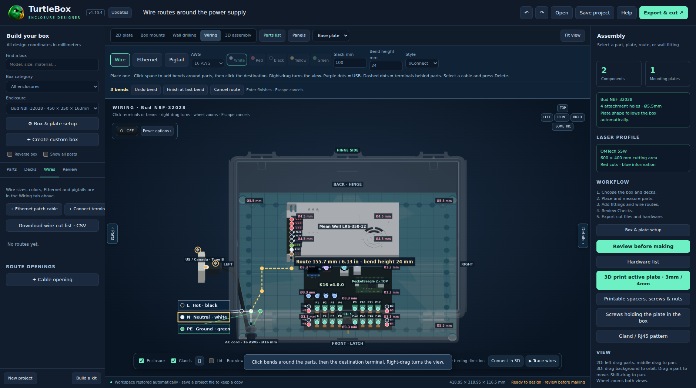
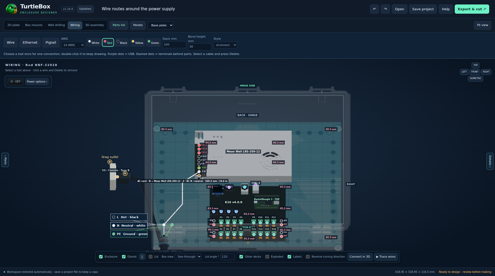

Only download the Setup .exe to install.Installs on Windows and updates the same app in place.
Windows Setup · 1.10.4

Draw wires around your parts
Click the source, add bends in 3D, then click the destination. Adjust height, drag bend handles or redraw a saved route.

Make room to design
Hide either sidebar or press F9 for more canvas. Drag the separate amber plug and outlet handles, even while drawing wires.